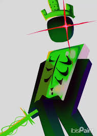

1x1x1x1 e um persogen do jogo forsake do roblox cujo e baseado em um hacker/meme mais ele acabou ficando famaso
MASS INFECTION
Após um tempo de preparação de 1,7s , 1x1x1x1 pega suas duas espadas e executa uma divisão horizontal com elas, criando uma onda de choque aguda que dura 6s e causa 35 de dano por golpe naqueles atingidos.

ENTANGLEMENT
pós um tempo de preparação de 0,75 s , 1x1x1x1 arremessa suas duas espadas, que têm uma vida útil de 10 s , para frente a uma velocidade de 125 pinos por segundo. Se atingir um sobrevivente, causa 10 de dano, e 1x1x1x1 ganha Velocidade II por 3 s.

UNSTABLE EY
1x1x1x1 perfura seus olhos vermelhos brilhantes e os rasga, revelando as auras de todos os sobreviventes vivos e aplica Velocidade I por 6,5s, enquanto também aplica Cegueira III por 6,5s.
REJUVENATE THE ROTTEN
1x1x1x1 se esfaqueia com suas espadas e os puxa para fora, ressuscitando todos os jogadores que eles mataram na forma de zumbis podres que os servem.